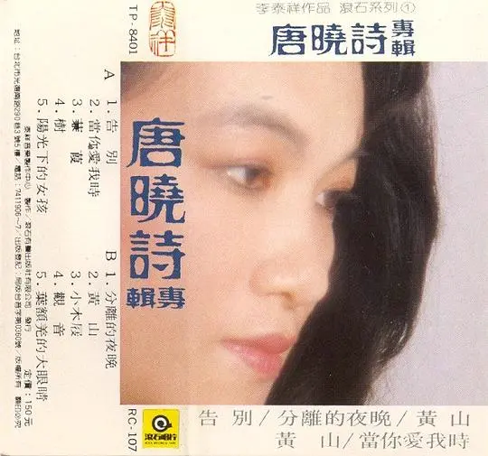

Album#10
唐曉詩專輯
{kind=link}

专辑信息
- 专辑名称：唐晓诗专辑
- 歌手：唐晓诗
- 年份：1984-12-28
- 风格：流行、民歌
- 时长：约 40 分钟
《路边野餐》 的片尾曲是 唐晓诗 和 李泰祥 合唱的《告别》，这首歌是影片中流转的磁带里的一首，我很喜欢，听了一遍又一遍，让人久久不能忘怀。
《告别》作为《路边野餐》的片尾曲，真是太合适了，以后听到《告别》大概都会响起《路边野餐》。
好奇《告别》是谁唱的，于是找到了《唐晓诗专辑》。
这张专辑是李泰祥校园民歌时代将台湾诗人余光中、李格弟、罗智成、罗门等的诗作谱曲而成。由民歌手唐晓诗演唱，李泰祥也参与演唱了多首歌曲。
专辑里的歌词本身都是诗作，文字写的很美。编曲上运用了很多弦乐，也都蛮好听的，整体是悠扬的，抒情的。演唱由唐晓诗和李泰祥一起，时而合唱，时而唐晓诗独唱，两人的声音我都很喜欢，两人一起把诗唱成了歌。
《告别》作词 李格弟，作曲、编曲李泰祥。
我醉了 我的愛人
在你燈火輝煌的眼裡
多想啊 就這樣沈沈地睡去
淚流到夢裡 醒了不再想起
在曾經同向的航行後
你的歸你 我的歸我
請聽我說 請靠著我
請不要畏懼此刻的沈默
再看一眼 一眼就要老了
再笑一笑 一笑就走了
在曾經同向的航行後
嗚～各自寂寞
原來的歸原來 往後的歸往後
我醉了 我的愛人
在你燈火輝煌的眼裡
多想啊 就這樣沈沈地睡去
淚流到夢裡 醒了不再想起
在曾經同向的航行後
你的歸你 我的歸我
請聽我說 請靠著我
請不要畏懼此刻的沈默
再看一眼 一眼就要老了
再笑一笑 一笑就走了
在曾經同向的航行後
啦啦啦啦啦～啦啦～
各自曲折 各自寂寞
原來的歸原來 往後的歸往後
歌曲的开头像是有一阵喧闹，能听到摩托车驶过的声音，杯子碰撞的声音，然后突然杯子掉落在地上破碎了，紧接着，一声钢琴响起，唐晓诗唱到「我醉了 我的爱人」，歌曲缓缓展开。
词写的真好，「在你灯火辉煌的眼里」，大概此时正是在繁华的夜市中吧，眼睛里映照着一片灯火辉煌。
「多想啊 就这样沉沉地睡去」，不想告别，不想离开，真希望能趁着醉意沉沉地睡去，什么都不再想起。
可是不得不分开，总归还是要告别，「你的归你，我的归我」。
即将告别了，彼此都不知道说写什么，再听我说些话吧，再靠近我一点吧，就算无话可说也没关系，陪着我吧。让我再看看你的模样，笑一笑吧，别那么难过，笑一笑吧，我就要走了。
从此往后，再也无法相伴同行了，各自走各自的路，「各自曲折 各自寂寞」。
「原來的歸原來 往後的歸往後」 你的身影留只能留在过去，往后也不会再出现了，各自珍重吧，再见了，再见了，我的爱人。
歌曲由唐晓诗和李泰祥分别唱一段，在对方唱着自己的段落时，另一个人则会在哼唱，仿佛在对话，彼此眷恋着。旋律中的弦乐也很优美，唐晓诗的歌声也很悠扬，整首歌唱出了告别的那种遗憾、不舍、难过，越到后面，感情越是浓厚，是我非常喜欢的一首。
《当你爱我时》作词李格弟，作曲、编曲李泰祥。
當你愛我時
你的眼睛便時時來尋找我的
當你恨我時
你的眼睛便留心將我的躲避
這一對淡褐的敏感的眸子
原是你靈魂的觸鬚
從他們的方向我可以探知
你靈魂每刻的消息
好听的提琴弦乐，鼓点和贝斯的旋律也好听，唐晓诗和李泰祥分别唱出了李格弟的这首诗。
爱一个人的时候，眼睛就会忍不住地寻找对方；恨一个人的时候，就不愿意看到对方，即使对方就在附近，也不愿意多看一眼。
一个人爱不爱你，通过他「灵魂的触须」就能知道了。
《蒹葭》作词 罗智成，作曲、编曲李泰祥。
风 风
冷冷地向我们取明的烛火瞥了一眼
那乍暗而未复明的一瞬
你华丽的爱情 惊惶地向我探询
听 听 我说
风 吹奏着群山
我不知道这首歌为什么叫《蒹葭》，我觉得叫《风》可能更合适。
编曲里用到了小号，小号明亮的声音会让我想到阳光照耀的山谷，小号的声音就像是一阵一阵的风，在山谷间吹过。
歌词中写的是「取明的烛火」，描述的应该是夜晚，但编曲更让我觉得像一个明媚的午后。
或许是诗人在夜里点着蜡烛思考着，恰好一阵风吹过，让烛光闪烁了一下，又听到风在群山吹过，带动树叶的声音，得到的灵感？
《树》作词 商禽，作曲、编曲李泰祥。
记忆中你淡淡的花
是浅浅的笑
失去的日子在你叶叶的飘坠中升高
星空中寻不着你颀长的枝柯
云层间你疏落的果实
一定冷且白
《阳光下的女孩》作词 罗门，作曲、编曲李泰祥。
舞在阳光下的女孩
把发与裙都飘给风
你踩着浪来 踩着花去
在阳光下跳着舞
海是你蓝色的梦
你的眼睛是原始的丛林
有鸟声 有溪流
也有使人迷失的雾
谁走进去都走不出来
看你的脸上放着一盘春天
一盘音乐 一盘爱
在阳光中旋转成笑的回声
舞在阳光下的女孩
把发与裙都飘给风
你踩着浪来 踩着花去
在阳光下跳着舞
词写的真好！编曲有一种异域风情。
我会想象有一个穿着裙子的女孩，在阳光下，被许多人围绕着，有人为她伴奏，而她则歌唱着、舞蹈着，充满活力，吸引着所有的人。
《分离的夜晚》作词吕启瑞，作曲、编曲李泰祥。B 面的第一首。
分离的夜晚 你对我喃喃轻诉
你说爱象一只精灵的小鸟
当你费尽心机地捕捉时
它总是顽皮地躲迷藏
偶然间它悄悄飞落你的手中
而你却踌躇地不知掌握
任它失望飞走
分离的夜晚 你对我娓娓轻唱
你说 你说 不必再伸出挽留的手
更无须若有所失地惆怅
且珍惜下次飞来的小鸟
谱下痴迷的恋曲
看起来是甲爱着乙，但乙踌躇了很久，最后甲失望地离开了。离别时，甲告诉乙，不必挽留，希望下次遇到爱情的时候，别再错过。
《黄山》作词马森，作曲、编曲李泰祥。
黄山啊黄山 经过了多少啊
易朝换代的风云 你仍然屹立在那里
黄山啊黄山 遭受了多少啊
晨风与暮雨 你依然保持了永驻的容颜
桑田啊 已化作了沧海
沧海啊 又化作了桑田
可是你仍以你的峥嵘 你的苍茂
你的劲拔 你的雄浑
赢得黄帝子孙的孺慕与眷恋
受创的心灵 从你那里得到了爱抚
离国的游子 从你那里获得了慰安
叠叠的严峰啊 是故国的血肉啊
层层的松柏啊 是故国的发肤
故国的苦难啊 深又长
故国的灾祸啊 一回回重演又重演
永驻的黄山啊 你仍对人间含笑啊
不老的黄山啊 你仍沉默而安祥
劲风何能终日吹 骤雨何能终朝落
黑夜的尽头 是黎明
看啊 云海深处有一只金色的鸟
他的翅膀就是大鹏的翼
听啊 受伤的血肉里有一颗跳动的心
他的搏跳就是黄山的云
黄山的云 黄山的云
在心的搏跳中 黄帝的子孙凝聚在一起
凝聚在一起 凝聚在一起
大鹏的翼 大鹏的翼
飞翔在故国山河的高空里
大鹏的翼 大鹏的翼
飞翔在故国山河的高空里
飞翔在故国山河的高空里
飞翔在故国山河的高空里
一首对黄山歌颂的歌，第一次听我觉得和专辑里的其他歌有点突兀，其他歌曲大多都是关于爱情，相对轻松的，而《黄山》这首就给人一种厚重感。
《小木屐》作词 余光中，作曲、编曲李泰祥。
踢踢踏 踏踏踢 给我一双小木屐
踢踢踏 踏踏踢 踢踢踏踏踢
踢踢踏 踏踏踢 踢踢踏
给我一双小木屐
让我把童年敲敲醒
像用笨笨的小乐器
从巷头到巷底 从巷头到巷底
踢力踏拉 踏拉踢力
踢力踏拉 踢力踏拉
踢踢踏 踏踏踢 踢踢踏踏踢
踢踢踏 踏踏踢
给我一双小木屐
童年的夏天在叫我
去追赶别的小把戏
从巷头到巷底 从巷头到巷底
踢力踏拉 踏拉踢力
踢力踏拉 踢力踏拉
跺了蹬 蹬了跺 跺了蹬蹬了跺
跺了蹬 蹬了跺 蹬了跺了蹬
给我一双小木柂
童年的夏天真热闹
成群的木柂满地柂
从日起到日落 从日起到日落
跺了蹬蹬 蹬了跺跺
跺了蹬蹬 蹬了跺跺
踢踢踏 踏踏踢 踢踢踏踏踢
踢踢踏 踏踏踢
给我一双小木屐
魔幻的节奏带领我
走回童话的小天地
从巷头到巷底 从巷头到巷底
踢力踏拉 踏拉踢力
踢力踏拉 踏拉踢力
很俏皮的一首歌，编曲里有一些叮叮咚咚的敲击声、小木屐踢踢踏踏的声音、跺脚的声音，很好玩。
唐晓诗的嗓音也很适合这首歌，中间有一段唱到「跺了蹬 蹬了跺 跺了蹬蹬了跺」的时候，声音还变了，模仿小孩的声音，也是很好听。
也是我很喜欢的一首。
《观音》作词罗智成，作曲、编曲李泰祥。
柔美的观音
已沉睡稀落的烛群里
她的睡姿是梦的黑屏风
我偷偷到她发下垂钓
每颗远方的星上
都大雪纷飞
这首诗我看不太明白，「梦的黑屏风」是什么？烛群里的观音下为什么可以垂钓？
不过旋律和唐晓诗的演唱，确实是柔美的，是好听的。
《叶额羌的大眼睛》作词罗智成，作曲、编曲李泰祥。
嘿！沙哈兜弥勒 叶额羌的大眼睛
你为什么不过来 叶额羌的大眼睛
你为什么羞怯地望着我 叶额羌的大眼睛
沙哈兜弥勒 叶额羌的大眼睛
晚霞都停在你的脸上不走了 不走了
嘿！沙哈兜弥勒 叶额羌的大眼睛
你为什么不过来 我是多么忧愁啊
我跳下我的座骑 叶额羌的大眼睛
沙哈兜弥勒 叶额羌的大眼睛
我要向你讨水喝呀 为什么你又躲起来 呵呵嘿
嘿！沙哈兜弥勒 叶额羌的大眼睛
你为什么不过来 叶额羌的大眼睛
你为什么羞怯地望着我 叶额羌的大眼睛
沙哈兜弥勒 叶额羌的大眼睛
晚霞都停在你的脸上不走了 不走了
也是有种异域风情的歌，像是一首舞曲，好听。